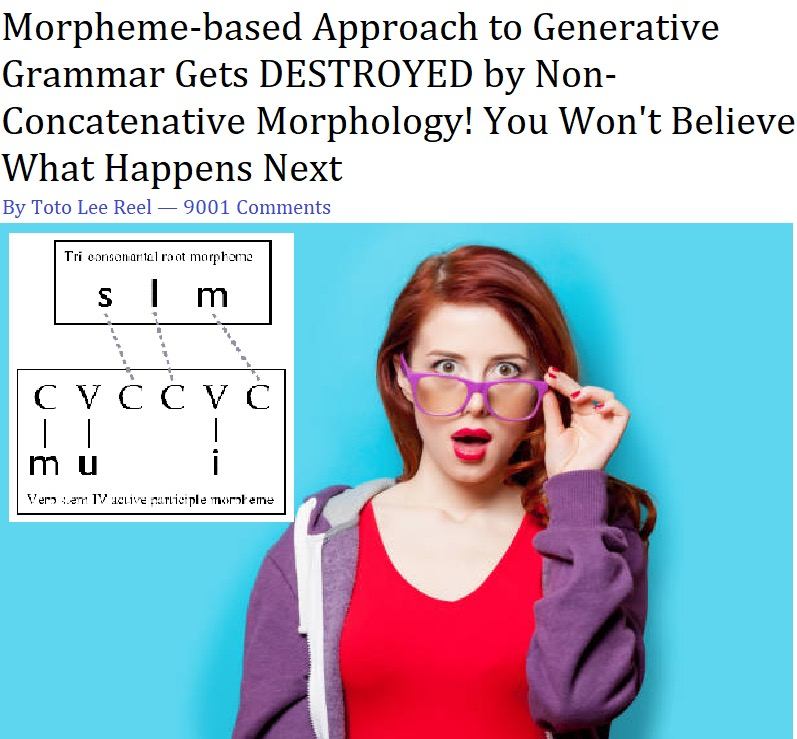
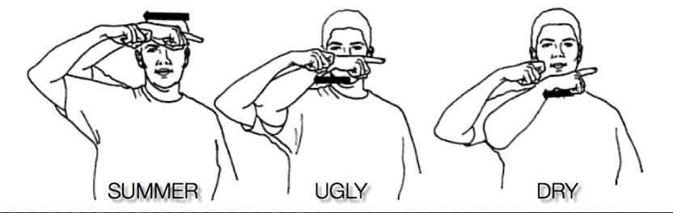
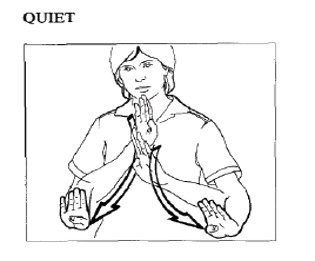
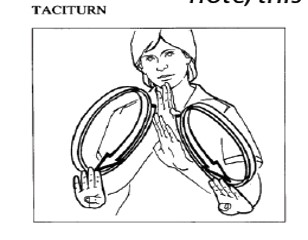
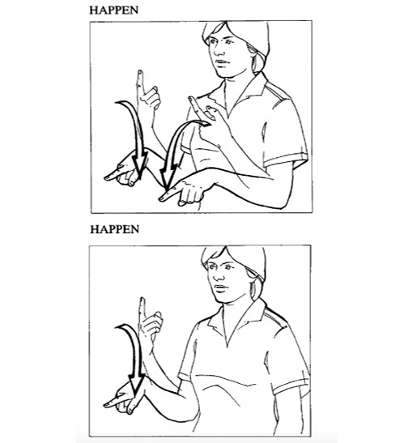
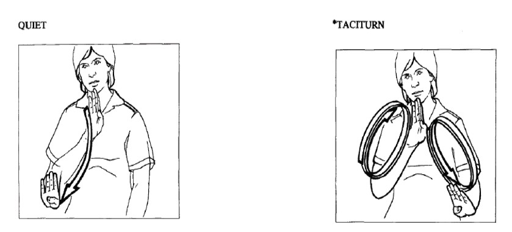
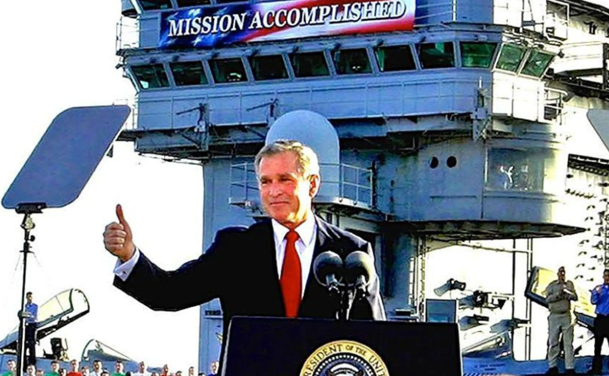

 (</small>From an anonymous student in an earlier 120 class</small>) --- # Sign Language Linguistics ### Matt Zaslansky - LIGN 101 --- ## ASL Structure vs. English Structure - Two languages in two modalities - <small>visual-gestural for ASL</small> - <small>aural-oral for English</small> - The two modalities exhibit different sub-lexical systems (e.g., phonology)  --- # Before we even talk about sign language - Let's revisit some assumptions we have about langauge --- ### Tom Holcomb’s five hallmarks of culture - language - heritage - customs - art - family or 'cultural players' --- ### Tom Holcomb’s five hallmarks of culture - The existence of a language suggests the existence of a wider human culture. Is this true for sign language(s)? --- ### Who are the cultural players for a sign language like American Sign Language? - Does American Sign Langauge belong to the American mainstream? - Consider where sign language shows up in American culture. <img class="wide" src="img/planet_of_the_apes.png"> --- ### Who are the cultural players for a sign languages? - If not other great apes, what about mer...men? - Note: The protagonist of the Shape of Water is 'mute.' Why not Deaf? <img class="wide" src="img/shape_of_water.png"> --- ### Who are the cultural players for a sign languages? - <a href="https://youtu.be/mDf48P4Zn9w?si=BCkYYgIeW896D9Qe&t=221">https://youtu.be/mDf48P4Zn9w?si=BCkYYgIeW896D9Qe&t=221</a> - What about interpreters? --- ### Who are the cultural players for a sign languages? - What about interpreters? --- ### Deaf people are the primary cultural players for sign languages - Like Millicent Simmonds - Recent winner of the Next Generation Award from the Hollywood Critics Association. <img class="r-stretch" src="img/quietplace.png"> --- ### Deafness comes at different times - Deafness can be from birth, from childhood, or later in life. <img class="r-stretch" src="img/sound_of_metal.png"> --- ### Deafness comes at different times - This is why we distinguish between capital-D 'Deaf' and lower-case 'deaf.' - It's the difference between culture and a physical description. > People are not born with culture; rather, they are born into a culture where strategies of survival are introduced to members of the community as they grow up. (Holcomb 2013: 17) <img class="r-stretch" src="img/CODA.png"> --- ### For more on the cultures around sign languages, check out LIGN 7 <img class="r-stretch" src="img/plug.jpg"> --- ## Distinctive features in sign langauge phonologies - handshape/hand configuration - location - movement - palm orientation - NNMs (non-manual markers) - <small>Stokoe 1975; Battison 1978</small> - more recently, handedness has also been identified as a feature in its own right, following Battison's initial observations - <small>Brentari 1998; Eccarius & Brentari 2007; also my own Master's (Zaslansky 2018)</small> --- # Let's talk about ASL --- ## Meet the derivational rules - Activity Noun Rule - Input a verb, output a verbal noun ('act'->'acting') - Characteristic Adjective Rule - Input an adjectival verb, reduplicate the sign in a larger sign space to output a characteristic adjective ('understand(ing)'->'flexible') - Note: the status of 'adjectives' in ASL is a disputed topic and I'm personally a skeptic: these inflect like verbs. - "Ish" adjectives - Input an adjectival verb X, trill it to output a derivational meaning 'sort of X' ('old'->'oldish') - Note: again, one could say this could be interpreted verbally as 'being sort of old.' --- ## Meet the phonological rules - Weak Drop - Input any symmetrical non-alternating two-handed sign, output the same sign now without the non-dominant hand (it gets 'dropped') - Weak Freeze - Input a two-handed sign with trilled movement, output the same sign now without the any movement on the non-dominant hand (it gets 'frozen') - Note! Unlike the derivational rules, these alleged phonological rules do not change the meaning of the sign. - This is basically the assumption underlying how Padden and Perlmutter are identifying what is phonological versus morphological. --- # The Derivational Rules --- ## Activity Noun Rule - Input a verb, output a verbal noun ('act'->'acting') <div class="row"> <div class="column"> <img class="wide" src="img/ASL_act.jpg" height="330" width="330"> </div> <div class="column"> <img class="wide" src="img/ASL_acting.jpg" height="230" width="230"> </div> </div> --- ## Characteristic Adjective Rule - One handed 'adjectives' becomes alternating two handed 'adjectives' <div class="row"> <div class="column"> <img class="wide" src="img/ASL_understanding.jpg" height="350" width="350"> </div> <div class="column"> <img class="wide" src="img/ASL_flexible.jpg" height="230" width="230"> </div> </div> --- ## Characteristic Adjective Rule - We see allomorphy in the two-handed base forms, which become non-alternating in their characteristic adjectival forms <div class="row"> <div class="column">  </div> <div class="column">  </div> </div> --- ## "Ish" adjectives - Input an adjectival verb X, trill it to output a derivational meaning 'sort of X' ('old'->'oldish') - Trill in the ASL tradition means 'repeated, tense/short motions' <div class="row"> <div class="column"> <img class="wide" src="img/ASL_old.jpg" height="150" width="150"> </div> <div class="column"> <img class="wide" src="img/ASL_oldish.jpg" height="150" width="150"> </div> </div> --- ### In the view of Padden & Perlmutter, derivation is internal to the lexicon and can feed itself > ...derivational rules can apply to each other's outputs as predicted. (337) - Consider the structure of CHARACTERISTICALLY QUIETISH. In English, this phenomenon in derivation yields a bracketing paradox, with multiple possible meanings/interpretations. Does the same hold for ASL? - CHARACTERISTICALLY [QUIET-ISH]? - or [CHARACTERISTICALLY QUIET]-ISH --- ### A bracketing paradox in ASL - Yes, we also get a bracketing paradox in ASL. <img class="wide" src="img/ASL_characteristically_quietish.jpg"> --- ### A bracketing paradox in ASL - They tell us not to worry too much about this. > Thus application of ISH and the Characteristic Adjective Rule to QUIET in different orders produces the same form (21), which is ambiguous between the two meanings in (22). (349) > Because the two meanings are so close, in practice it is difficult to distinguish them. (Footnote 3) - Either way, cool! This looks very much like traditional derivational morphology! --- ## What about the phonology? <img class="wide" src="img/asl_die.gif"> - The sign for DIE - <small>ASL GIFs courtesy of Dr. Bill Vicars at <a href="http://www.lifeprint.com">http://www.lifeprint.com</a> </small> --- # The phonological rules --- ### Keep in mind the assumption made by the authors! > lexical rules feed phonological rules, but phonological rules cannot feed lexical rules (336) - We're working towards a prediction on how the phonological rules will interact with the aforementioned morphological rules! --- ## Weak Drop and Weak Freeze - Weak Drop and Weak Freeze are both allegedly phonological rules that apply to two-handed signs. - But they're not made equal. - Weak Drop is the way cooler sibling. - Or at least, Weak Drop has been of more interest to academics - <small>Battison 1978; Brentari 1998; Sandler 1989; Schermer 1990; Eccarius & Brentari 2007; Morgan & Mayberry 2012; Zaslansky 2018</small> --- ## Stop trying to make Weak Freeze HAPPEN <img class="wide" src="memes/weak_freeze_mean_girls.png"> --- ## Weak Drop totally HAPPENS - Input any symmetrical non-alternating two-handed sign, output the same sign now without the non-dominant hand (it gets 'dropped') - This Symmetry Condition goes all the way back to Battison 1978: - The Symmetry Condition - > When two hands are active articulators in the production of a sign, they will share the phonological parameters of handshape, sign, and movement (though this can be alternating or synchronous). --- ## Weak Drop totally HAPPENS  --- ## Phonology and Morphology: Friends or stalker-stalkee? > lexical rules feed phonological rules, but phonological rules cannot feed lexical rules (336) - This assumption carries a prediction: if P follows M, then M rules like Characteristic Adjective on forms with Weak Drop should not be licensed - Weak Drop takes a two-handed sign and outputs a one-handed sign *without* any change in meaning --- ## Phonology and Morphology: Friends or stalker-stalkee? - Prediction: IFF P were to precede M or to occur simultaneously, then: - the rule for Characteristic Adjectives - input: a one handed sign (like the outputs of WD would be) - output: an alternating two-handed sign - ...would be totally fine with licensing these forms - But such forms are shown to be unlicensed. - Therefore P follows M. --- ## Therefore P follows M  - Padden & Perlmutter (1987: 367) --- # Mission Accomplished! - Why are we doing this again? - Without this work, claims that ASL is a full and natural language would risk coming off as vapid - We have decades of work showing the substance behind these kinds of claims now, and it's all pretty damn convincing from a linguistic perspective. - Sign languages are not translations or new mediums of spoken languages in the ways that written language is a medium for spoken language. They're pretty distinct. - Now that we can say that sign languages are fully natural languages... - now we need to actually account for them in our grand theory of Language, which means we need to avoid developing theories that can only account for spoken language data, but then aren't applicable to sign languages --- # Mission Accomplished?  - or is it? --- ### Mission Accomplished? - The authors tell a very convincing for treating Weak Drop as a post-lexical phonological rule which applies to any non-alternating them - This helps them to justify generative theories in which P follows M, like Chomsky & Halle 1986. - The lexical status of the stem as derived or not doesn't matter too much for the phonology. - This allows us to elegantly account for all of the common(ly cited) cases of 'phonology' in spoken and sign languages, which is great! - ...but in some cases not discussed by Padden & Perlmutter, Weak Drop appears to be sensitive to morphological form, which throws a monkey-wrench into all of this. --- ### Weak Drop and Inflection - ASL has three synonymous variants of dual number inflection on object-agreeing verbs. - a two-handed sequential form, a two-handed simultaneous form, and a one-handed sequential form (which appears to exhibit Weak Drop!) - This is known as overabundance in inflectional morphology (Thornton 2011) - MOCK and ANALYZE are two-handed verbs underlyingly, but permit Weak Drop completely grammatically for singular arguments - Two interpretations: - Phonological: P follows M and therefore cannot ever apply to a derived or inflected wordform. - Morphological: Weak Drop is only ungrammatical when the argument is a dual object for this class of verbs! --- ### Weak Drop and Inflection - GIVE is a different class of verb that allows for Weak Drop to occur even in the inflected dual form. - Phonological: ? - Morphological: Weak Drop is tied to morpholexical classes --- ## Weak Drop and the Dual inflection - <img class="wide" src="img/ASL_mock_dual_weakdrop.jpg" height="550" width="600"> - <small>Zaslansky 2018</small> --- ## Weak Drop and the Dual inflection - <img class="wide" src="img/ASL_analyze_dual_weakdrop.jpg" height="550" width="600"> - <small>Zaslansky 2018</small> --- ## Weak Drop and the Dual inflection - <img class="wide" src="img/ASL_give_dual.jpg" height="550" width="600"> - <small>Zaslansky 2018</small> --- ## So are the authors right? Is Weak Drop really phonology? - Maybe. Sometimes the boundaries of phonology and morphology get murky, this isn't just a thing in sign language. - Maybe P & M occur at the same time after all? Maybe Weak Drop is a morphological rule after all? - Sure! I'd say so. - But there's a BIG caveat! This approach isn't risk-free for the phonologists, we're basically letting morphology eat phonology until it goes away. --- ## Is Weak Drop morphology? > Of course, one could put Weak Drop in the lexicon and impose a parochial ordering constraint to prevent its outputs from undergoing the Characteristic Adjective Rule. Under this proposal, the impossibility of (55) would be an arbitrary fact. (368) - But maybe arbitrary facts are okay? More data is needed to say anything conclusive about capital-L Language, but there are plenty of people who are trying. --- <img class="wide" src="morphology/bybee_analogy.jpg"> - <small>Bybee 1998</small> --- <huge>Thank you!</huge>